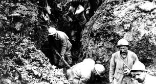

<|
BREZHONEK (Kroaz ar Vretoned, N°215, 15 a viz Ebrel 1917, P.1) 1. Du-mañ 'n hor bro gaer Breiz-Izel Ar gwiskamant zo disheñvel D'an dud a boagn er parkeier Hag hini a chom e Kêr 2. Ur bragou bras, frank ha ledan, Ur jiletenn hag un turban, Gant ur chupenn a-dreñv fleñchet, Gant meur a zen a vez douget. 3. 'Lec'hioù all 'zo 'vez alaouret Gwiskamanchoù brav ar baotred ; Dre holl avat, un tokig du, Bleuk ha boulouzenn a bep tu. 4. Kalz Gallaoued ha fals-Vreizhiz 'Gav an dra-se un tamm iskis, Ha, pa welont ur c'haezh koueriad : « Plouk ! Plouk ! » warnañ 'hopont dalc'hmat. 5. Gant ar brezel ez-omp mesket Met ar c'hiz fall n'eo ket cheñchet » Mard'omp-ni holl gwisket e glas, Etre hor yezh ez eus kemm c'hoazh. 6. Ar wir Vreizhiz a zo dre holl 'Vel o gweler e Remungol Ha sonioù kaer, gwerzioù hor Bro A vez kanet uhel tro-dro. 7. Sell ! Emaint o tebriñ kolo ! » A lar buan ar paotr Gallo ; Gant dismegañs 'deu da hopal : « Plouk ! Plouk ! Serr 'ta da siminal ! 8. Ma oa gwechall 'raok ar brezel Kemm etre liv, stumm ha mantel, Hor yezhoù 'zoug d'an esperañs Hag holl e tifennomp ar Frañs. 9. Bevet holl soudarded ar vro ! Gallo ha Breizhad en un dro ; Pep hini 'n deus graet e zever Er Marn, er Somm hag en Yzer. 10. E Verdun an Alamaned A zo bet pelloc'h distoupet Er C'hronprinz ez-eus atav droug E vije c'hoazh Gallo ha Plouk ! 11. Ra vevint ! Ra vevint atav ! Va mennozh, va gwir mennozh eo! Ra vevint ! Ra vevint atav ! Va mennozh, va gwir mennozh eo! Skritur KLT gant Bernez Rouz. |
TRADUCTION FRANCAISE (La « Croix des Bretons », N°215, davril 1917, p.1) 1. Dans mon beau pays de Bretagne, Les vêtements sont différents Selon quon peine à la campagne Ou qu'on habite loin des champs. 2. Des pantalons amples et larges, Ceinture quon nomme turban, Gilet, veston au dos à franges : C'est ce que portent bien des gens. 3. Si dans dautres endroits lon aime Porter de beaux habits dorés, Le chapeau noir reste le même : Boucle et rubans des deux côtés. 4. Plus dun Français, dun Breton-traître Trouve étrange cet habit-là : Quun paysan vienne à paraître « Plouc ! Plouc ! » crient-ils, dès quils le voient. 5. La guerre fait quon se mélange, Mais lusage n'a point changé. Restent différentes les langues, Si de bleu tous sont habillés. 6. Les vrais Bretons se reconnaissent Comme au pardon de Remungol A leurs beaux chants, à leurs complaintes Qui bien haut prennent leur envol. 7. « Regarde! Ils mangent de la paille ! » Sécrit aussitôt le Français, Avec sa méprisante gouaille. « Plouc ! Plouc ! Ferme donc ton clapet ! » 8. Avant la guerre on pouvait voir Bien des formes et des couleurs... Dans nos langues, un seul espoir: France, être tous tes défenseurs! 9. Vivent les soldats de la France! Quils soient Bretons, Normands, Briards, Sur lYser, la Somme, la Marne Chacun deux a fait son devoir... 10. A Verdun les Allemands furent Battus. Tu dus partir plus loin, Kronprinz qu'une vision torture: Français et Ploucs, arme à la main. 11. Qu'ils vivent! Vous m'entendez bien? C'est mon idée à moi. J'y tiens! Qu'ils vivent! Vous m'entendez bien? C'est mon idée à moi. J'y tiens! Traduction: Christian Souchon (c) 2018 |
ENGLISH TRANSLATION («Cross of Britanny», N°215, Avril 1917, p.1) 1. In Lower Brittany, down there, Clothes differ a lot everywhere Depending on if you work on Meads and fields or live in town. 2. Broad, cozy knickerbockers and A waistcoat matching a waistband, A jacket fringed on the backside Thats what people wear far and wide. 3. Elsewhere the garbs preferred by men Have gilded ornaments on them But everywhere a small black hat With buckle and two tapes at that. 4. Many French and false Bretons find A bit strange garments of that kind When they spy peasants with such look They always will cry Plouc! Plouc! 5. The war had caused people to mix Together but they kept their tricks And though we are all clad in blue We dont speak the same way, its true. 6. The genuine Bretons above all Do as they did at Remungol: The old songs and ballads so fair Will high and clear resound the air. 7. Listen they munch their straw again! A Gallic brat will soon exclaim. The usual disparaging word Plouc, shut your trap! is soon heard. 8. Before the war one could have seen Differences in hue, form or mien. But twas the same hope in all tongues: France, defended by all your sons! 9. Be soldiers of France all of you, Basque, Breton, Parisian or Jew! They did their duty, all of them Along the Yser, Marne and Somme. 10. In Verdun the Germans were crushed, Defeated and were driven back: The Kronprinz to his heels he took On seeing the Frenchman and the Plouc. 11. Hip, hip, hip, hurray for the two Of them: Thats what I mean. I do! Hip, hip, hip, hurray for the two Of them: Thats what I mean. I do! Translated by Christian Souchon (c) 2018 |